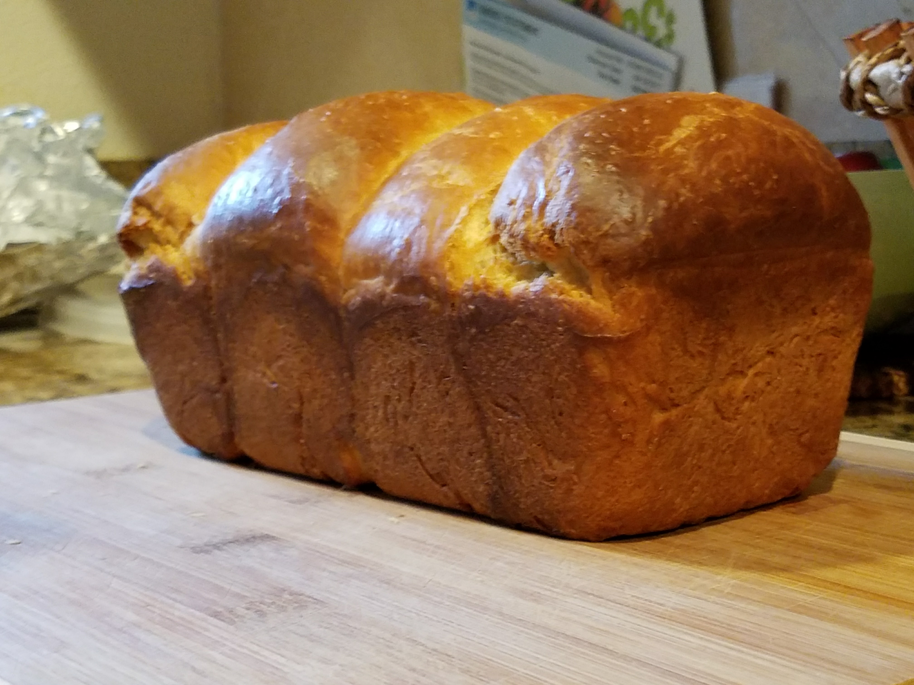

The Baking Experience
Origins
I started baking sometime in the middle of college, and it's been an ongoing pursuit. Since the beginning, baking bread has been at the forefront, and for good reason. Bread occupies a special niche in human culinary culture as one of the most ubiquitous comfort food staples. While not everyone can agree on what bread is best - whether it be a dark rye, a french baguette, the practical pita, or the coveted sourdough loaf - most would agree that bread is uniquely delicious.

Getting started
This is how I like to think of bread baking at its barest bones:
- Mix your ingredients into a fairly cohesive dough ball
- Let that dough ball ferment and grow
- Shape the dough ball and let it rest
- Bake the dough
- Let the bread cool, cut, and consume
As you might guess, it can get much more complicated. There are techniques like autolysing the dough (which is first mixing flour and water on their own), using preferments (such as poolish or biga), and refining the resting and shaping stages. There is certainly no harm in doing simple breads that require few steps, and in fact those can be some of the most satisfying projects. I encourage whoever is reading this to experiment on your own after following a few recipes. Try adjusting things like ingredient ratios, the timing of adding/mixing in those ingredients, and the amount of time your dough/bread spends in each stage
Pictures
Here is a gallery of some of my bread projects!
- 